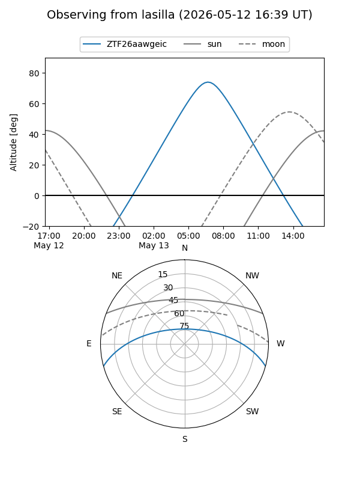
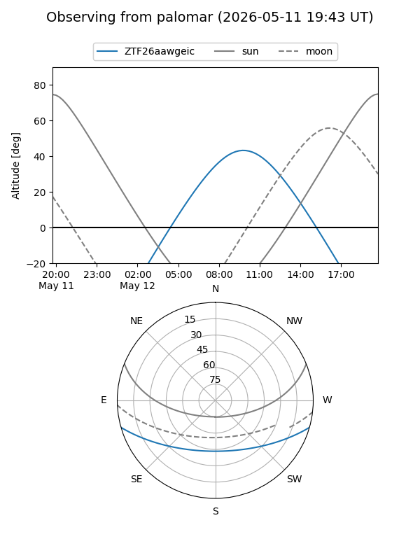

ZTF26aawgeic
Target ZTF26aawgeic at 2026-05-12 10:12
Aliases and brokers:
FINK: link
Lasair: link
ALeRCE: link
alt names
ZTF26aawgeic (ztf,fink_ztf)
Coordinates:
equatorial (ra, dec) = 260.0040,-13.30597
equatorial (HMS+DMS) = 17:20:00.97,-13:18:21.49
galactic (l, b) = (10.1197,+13.38264)
Flags:
Photometry:
last ztfg=16.08
1 ztfg detections
Lightcurve
Visibility


Additional plots